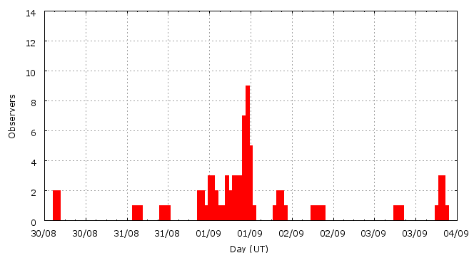

Activity profile
Activity profileThis page shows automated results of the Alpha-Aurigids 2007, based on visual data entered through the IMO electronic report form. Send your feedback regarding this page to Geert Barentsen or visit the project pages. Note that automated results are not suitable for scientific use!
Page generated on 23 December 2007 at 15:12 UT.
ZHRmax = 216 based on 239 Alpha-Aurigids in 98 data intervals, assuming fixed population index r = 2.0 and zenith correction 1/sin(hR).

| Time (UT) | Solarlon | nINT | nAUR | ZHR | |
|---|---|---|---|---|---|
| 2007-08-30 04:12 | 156.334 | 2 | 0 | 2 | +-2 |
| 2007-08-31 03:51 | 157.286 | 1 | 0 | 4 | +-4 |
| 2007-08-31 12:07 | 157.619 | 3 | 0 | 14 | +-14 |
| 2007-08-31 22:27 | 158.036 | 3 | 4 | 30 | +-13 |
| 2007-09-01 01:00 | 158.138 | 4 | 7 | 12 | +-4 |
| 2007-09-01 02:14 | 158.188 | 3 | 7 | 15 | +-5 |
| 2007-09-01 04:13 | 158.268 | 2 | 1 | 3 | +-2 |
| 2007-09-01 06:13 | 158.348 | 3 | 1 | 4 | +-3 |
| 2007-09-01 08:17 | 158.432 | 4 | 4 | 6 | +-3 |
| 2007-09-01 09:30 | 158.480 | 2 | 0 | 2 | +-2 |
| 2007-09-01 10:47 | 158.533 | 16 | 44 | 52 | +-8 |
| 2007-09-01 11:15 | 158.551 | 7 | 51 | 140 | +-19 |
| 2007-09-01 11:27 | 158.559 | 11 | 60 | 216 | +-28 |
| 2007-09-01 11:39 | 158.567 | 14 | 40 | 69 | +-11 |
| 2007-09-01 12:06 | 158.586 | 11 | 8 | 14 | +-5 |
| 2007-09-01 21:04 | 158.947 | 3 | 4 | 14 | +-6 |
| 2007-09-01 22:26 | 159.002 | 1 | 1 | 24 | +-17 |
| 2007-09-02 07:44 | 159.377 | 2 | 1 | 5 | +-4 |
| 2007-09-02 08:56 | 159.425 | 1 | 3 | 17 | +-8 |
| 2007-09-03 07:32 | 160.337 | 1 | 0 | 5 | +-5 |
| 2007-09-03 20:08 | 160.845 | 4 | 3 | 8 | +-4 |
For each estimation interval: time is the middle of the interval, nINT is the number of observing periods and nAUR is the number of Alpha-Aurigids involved. ZHR = (1 + sum nAUR) / sum(Teff/C) where Teff is the effective observing time and C is the total correction for limiting magnitude, clouds and zenith correction. The solar longitudes refer to equinox J2000.0.
ZHRmax = 167 based on 158 Alpha-Aurigids in 53 data intervals, assuming fixed population index r = 2.0 and zenith correction 1/sin(hR).

| Time (UT) | Solarlon | nINT | nAUR | ZHR | |
|---|---|---|---|---|---|
| 2007-09-01 10:25 | 158.517 | 6 | 7 | 12 | +-4 |
| 2007-09-01 10:50 | 158.534 | 6 | 16 | 54 | +-13 |
| 2007-09-01 11:01 | 158.542 | 4 | 16 | 131 | +-32 |
| 2007-09-01 11:08 | 158.547 | 2 | 21 | 113 | +-24 |
| 2007-09-01 11:14 | 158.551 | 4 | 18 | 130 | +-30 |
| 2007-09-01 11:20 | 158.554 | 2 | 17 | 116 | +-27 |
| 2007-09-01 11:28 | 158.560 | 5 | 17 | 167 | +-39 |
| 2007-09-01 11:35 | 158.565 | 6 | 23 | 62 | +-13 |
| 2007-09-01 11:43 | 158.570 | 7 | 15 | 86 | +-22 |
| 2007-09-01 12:03 | 158.583 | 10 | 8 | 18 | +-6 |
| 2007-09-01 12:43 | 158.610 | 1 | 0 | 7 | +-7 |
For each estimation interval: time is the middle of the interval, nINT is the number of observing periods and nAUR is the number of Alpha-Aurigids involved. ZHR = (1 + sum nAUR) / sum(Teff/C) where Teff is the effective observing time and C is the total correction for limiting magnitude, clouds and zenith correction. The solar longitudes refer to equinox J2000.0.
Data has been received from 21 observers in 11 countries. Thank you for your efforts!

| Observer | Country | Teff | nAUR |
|---|---|---|---|
| Tomasz Adam | Poland | 1.00h | 1 |
| Salvador Aguirre | Morocco | 7.70h | 1 |
| Jose Alvarellos | United States | 1.25h | 9 |
| Bernd Brinkmann | Germany | 2.58h | 37 |
| Mark Cook | United Kingdom | 2.00h | 0 |
| Daniel Fischer | Germany | 1.16h | 21 |
| Mitja Govedic | Slovenia | 2.98h | 14 |
| Wayne T. Hally | United States | 7.52h | 8 |
| Robin Hegenbarth | United States | 1.12h | 24 |
| Carl Hergenrother | United States | 1.82h | 21 |
| Jakub Koukal | Czech Republic | 1.42h | 3 |
| Peter Kozich | United States | 1.17h | 52 |
| Robert Lunsford | United States | 4.75h | 26 |
| Bruce Mccurdy | Canada | 0.50h | 9 |
| Eran Ofek | United States | 0.23h | 6 |
| Krzysztof Polakowski | Poland | 4.50h | 6 |
| Jurgen Rendtel | Germany | 1.20h | 1 |
| Josep Trigo Rodriguez | Spain | 0.83h | 0 |
| Simona Vaduvescu | Romania | 2.00h | 5 |
| William Watson | United States | 2.95h | 1 |
| Ilkka Yrjola | Finland | 1.00h | 1 |
Create your own analysis!
Rate intervals: aur2007_rate.csv (CSV-format).
Magnitude distributions: aur2007_magn.csv (CSV-format).